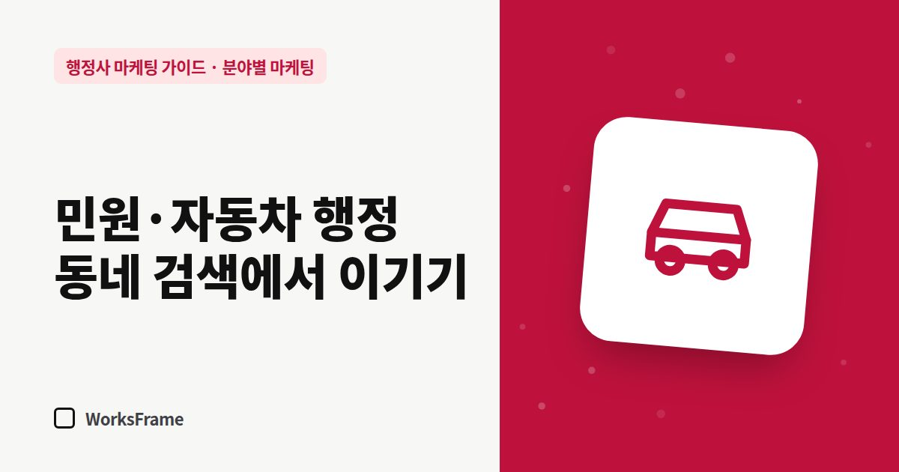

분야별 마케팅
민원·자동차 행정 업무, 동네 검색에서 이기는 법
한 줄 답
단가가 낮고 건수가 많은 업무는 동네 검색에서 이겨야 합니다. 플레이스 정보를 꽉 채우고, 찾아오는 길을 알려 주고, 전화를 가장 빨리 받는 사무소가 일을 가져갑니다.

민원 서류 대행, 자동차 명의 이전·등록 같은 업무는 한 건의 수임료가 크지 않은 대신 자주, 가까운 곳에서 생깁니다. 이런 업무는 전국 검색보다 동네 검색에서 이겨야 합니다.
고객의 검색은 짧고 급합니다
- “○○동 행정사”
- “근처 자동차 이전 대행”
- “○○구청 근처 서류 대행”
대부분 휴대폰으로, 지도에서 찾고, 바로 전화합니다.
이기는 곳은 네이버 플레이스
| 할 일 | 이유 |
|---|---|
| 플레이스 정보 100% 채우기 | 비어 있는 곳보다 신뢰 (채우는 법) |
| 대표 키워드에 동네·업무 | “○○동 행정사”, “자동차 이전” |
| 영업시간 정확히 | 급한 고객은 지금 열었는지부터 봄 |
| 주차·찾아오는 길 사진 | 방문 고객의 첫 걱정 |
| 리뷰 꾸준히 | 비슷한 사무소 중 선택의 기준 (후기 받는 법) |
방문 편의가 경쟁력
- 대중교통·주차 안내를 플레이스와 홈페이지에
- 관공서와의 거리 — “○○구청에서 도보 5분”
- 준비물 안내를 미리 보내 헛걸음 줄이기
빠른 응답이 곧 수임
단가가 낮은 업무일수록 고객은 여러 곳에 동시에 전화합니다. 먼저 받는 곳이 일을 가져갑니다.
- 부재중 자동 문자와 카톡 안내 (업무 도구 세팅)
- 자주 받는 업무의 가격 범위와 준비물을 문자 양식으로 준비
반복 고객 만들기
자동차 매매상, 부동산 중개사무소처럼 같은 업무가 반복되는 사업자와 관계를 만들면 안정적인 물량이 됩니다. 처리 속도와 정확한 진행 안내가 가장 좋은 영업입니다.
자주 묻는 질문
단가가 낮은데 홈페이지까지 필요할까요?
동네 업무는 플레이스가 우선입니다. 다만 업무 종류가 많다면 준비물을 정리한 간단한 홈페이지가 전화 문의 시간을 줄여 줍니다.
가격을 낮춰 경쟁해야 하나요?
가격보다 속도와 정확성으로 경쟁하는 편이 오래갑니다. 가격 범위를 공개하고, 빠른 응답과 헛걸음 없는 안내로 차별화하세요.